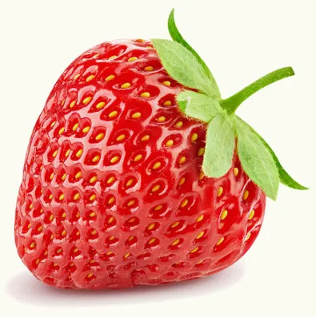
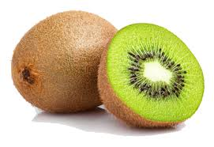
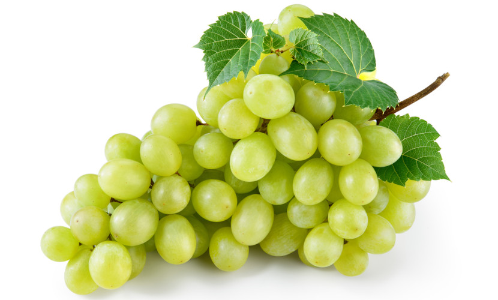
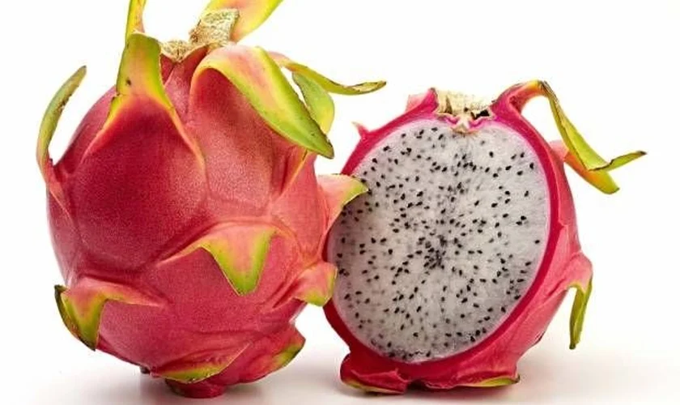
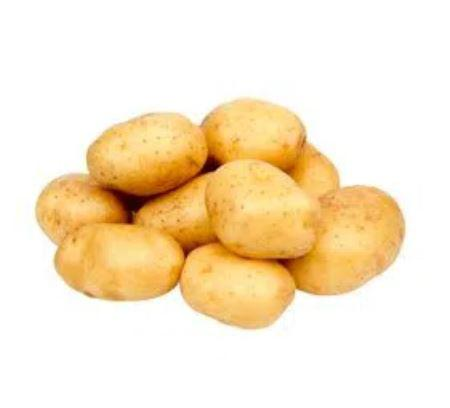
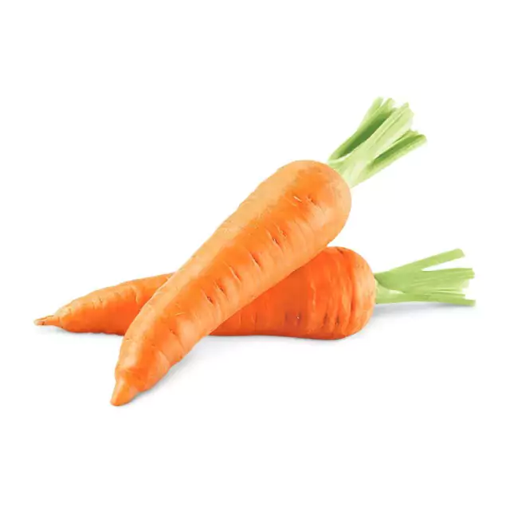
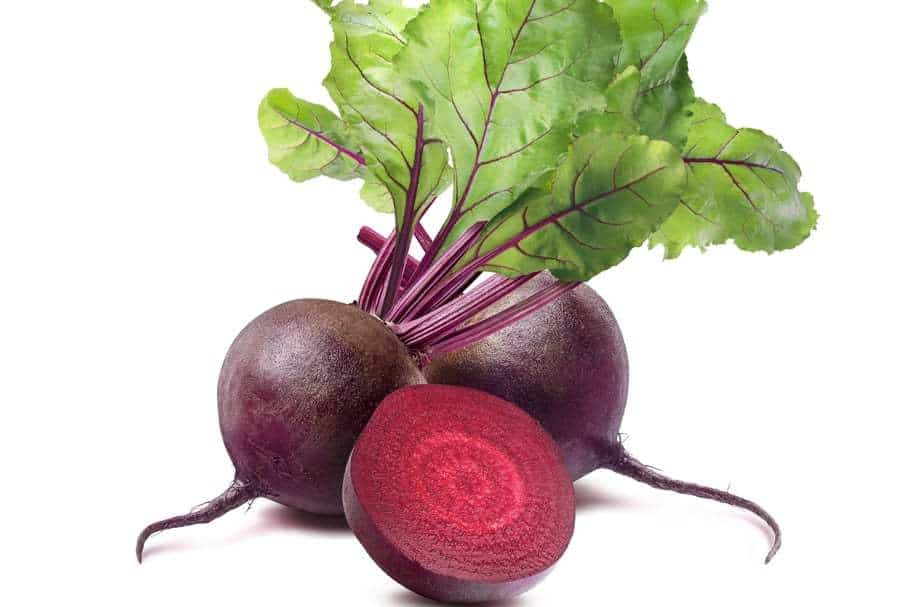
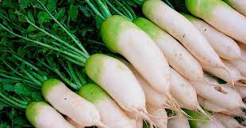

Filtros de Imagens
Frutas
| Morango sem filtro | Morango com filtro |
|  | |
| Kiwi sem filtro | Kiwi com filtro |
|  | |
| Uva sem filtro | Uva com filtro |
|  | |
| Açaí sem filtro | Açaí com filtro |
 |
|
| Pitaya sem filtro | Pitaya com filtro |
|  | Batata sem filtro | Batata com filtro |
|  | |
| Cenoura sem filtro | Cenoura com filtro |
|  | |
| Beterraba sem filtro | Beterraba com filtro |
|  | |
| Nabo sem filtro | Nabo com filtro |
|  | |
| Vagem sem filtro | Vagem com filtro |